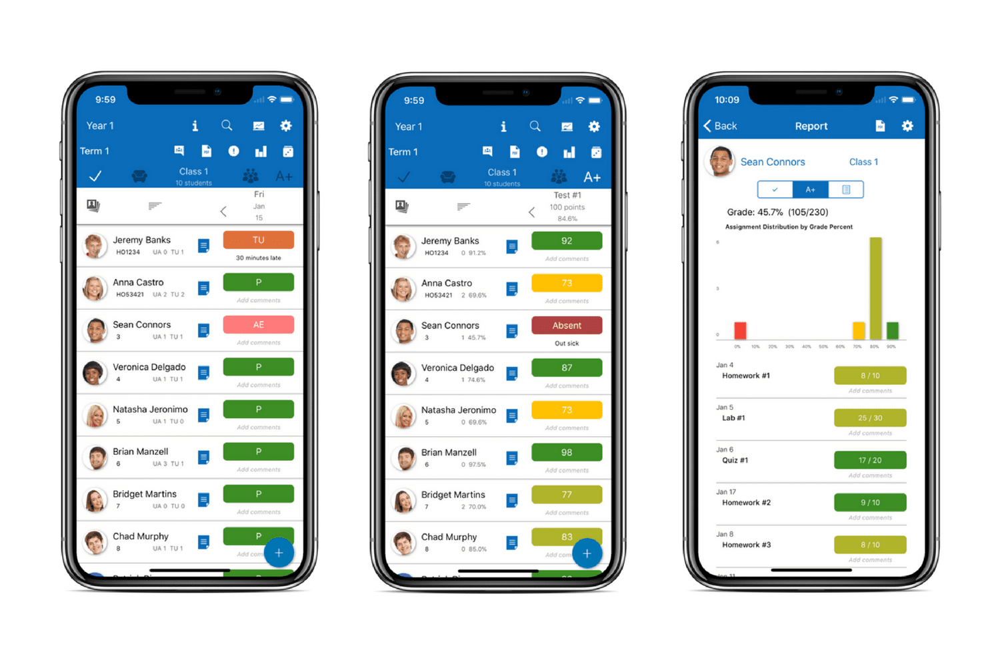

Diseñar para el contexto
26 de Octubre del 2020
Diseño de aplicaciones

El contexto de un producto son las circunstancias o el entorno en el que se utiliza un objeto, y que añaden a su significado.
Cuando hablamos de este contexto sobre el escenario de las Apps móviles nos referimos al conjunto de circunstancias que nos rodean (clientes, tecnología, necesidades, objetivos, etc.) y sin las que no se puede dar una situación determinada con éxito.
Por tanto, el contexto de las aplicaciones implica tener en cuenta el tipo de dispositivo desde el que se va a utilizar, las funcionalidades, la movilidad… La satisfacción de un cliente con un producto depende del contexto de su uso.
Un diseñador de producto debe conocer el contexto en el cual sus usuarios trabajan y adaptar el producto digital a ellos. La magia del contexto es esa que el diseñador se anticipa a los deseos o necesidades de los usuarios antes incluso de que los tenga.
Anticiparse a las necesidades de uso

Un usuario quiere llamar a un amigo que está en su lista de contactos y que es un contacto frecuente, esa sería la user story.
En una app normal el usuario teclearía el nombre y le irían saliendo los nombres por orden alfabético los que más se parecen a lo tecleado y según fuera tecleando aparecerían menos resultados hasta que encontrara lo que buscase.
En una app contextual el usuario teclearía el nombre y le aparecería el contacto con una foto y le aparecerían los contactos ordenados por frecuencia de uso, por lo cual encontraría el usuario que busca rapidamente.
Lo que hace un producto digital con diseño contextual es adelantarse a las necesidades del usuario, en este caso es más probable que quiera llamar a los usuarios frecuentes que a los usuarios por orden alfabético.
Preguntas importantes al realizar una aplicación
Para crear una aplicación hay que hacerla pensando en tu aplicaciones y en los diferentes contextos que tus usuarios les gustaría encontrar:
¿Qué barreras encuentra el contexto en una aplicación?

Hace unos años atrás, estos servicios eran impensables. Después fueron novedosos. Y ahora muy pocos se atreven a vivir sin ellos. Las aplicaciones ya forman parte de nuestro día a día, aunque solo sea para enviar un mensaje vía WhatsApp. Con ellas, también ha cambiado el contexto, pues las Apps de hace 5 años, incluso menos, se unían a los primeros desarrollos, de manear que la novedad del canal se convertía en una barrera.
Gracias a sus funciones, los usuarios han ido tomando conciencia de las ventajas que aportan de cara a su comodidad, a sus necesidades y a su contacto con las empresas. Sin embargo, cuando se crea una aplicación, no se hace pensando en un público general, sino en su público objetivo y potencial.
Cualquier información que pueda servir para definir la situación de una empresa, de un producto o de los clientes, es relevante para la interacción con la App.
Los servicios informáticos/tecnológicos han evolucionado de tal forma que ya es posible brindar servicios en función del perfil que tenga un usuario, su ubicación, la edad, etc.
Conclusiones
La tecnología amplía los caminos de la sociedad a un nivel muy alto. Tanto es así, que las aplicaciones han vivido una gran evolución desde que se comenzaron a crear. Las empresas aprovechan el uso generalizado de los smartphones para acercarse a los usuarios por medio de aplicaciones propias que ofrecen un servicio más rápido y cercano. Cualquier lugar puede ser bueno para hacer una consulta.
Y no solo eso. Las marcas también aprovechan cualquier dato para conocer mejor a sus clientes o consumidores, de manera que lo utilizan para ofrecer lo que están buscando y en el momento en el que lo necesitan.